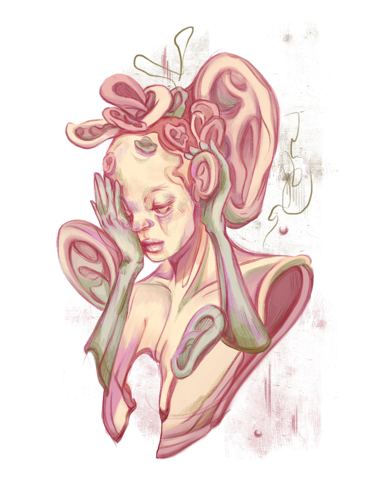
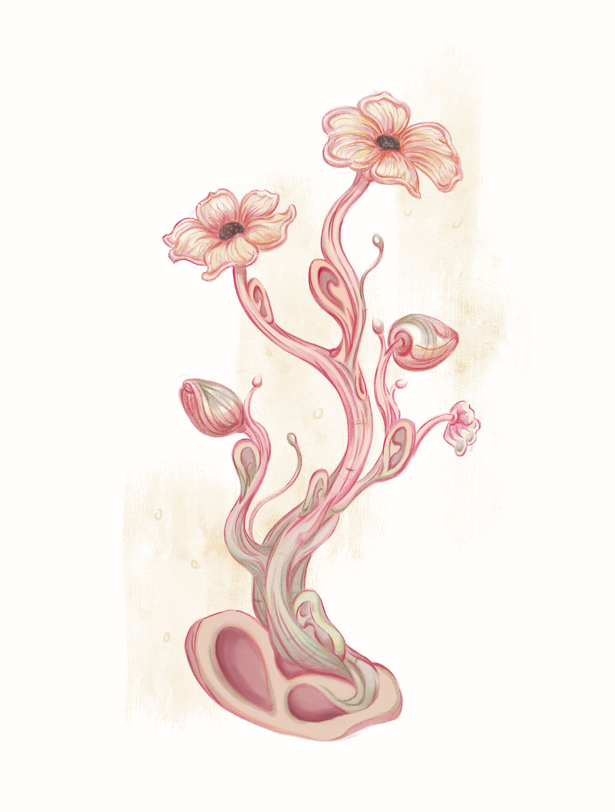
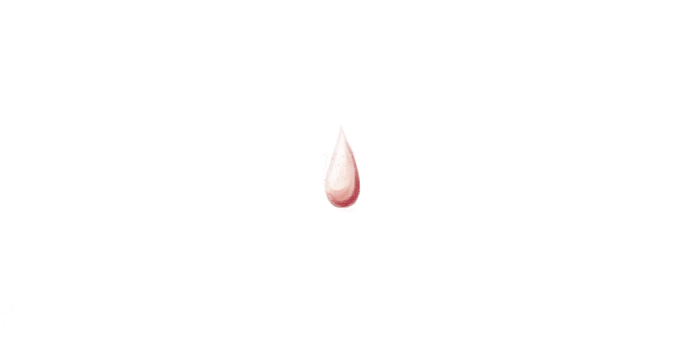
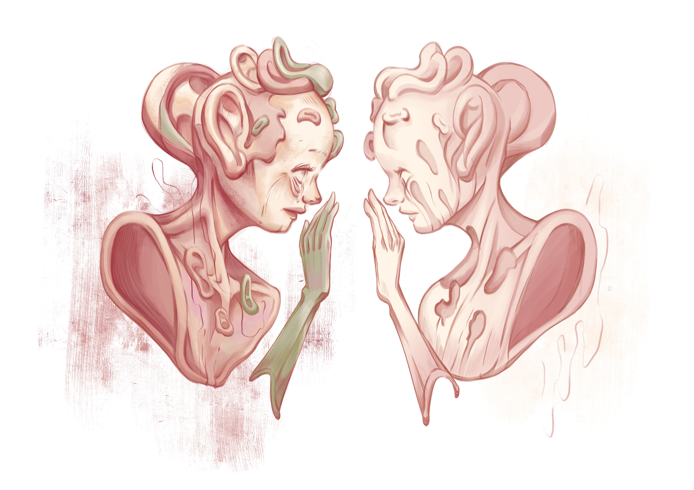
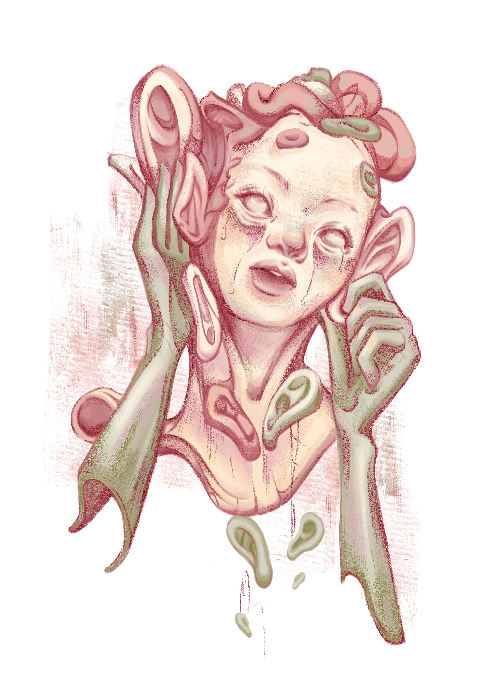
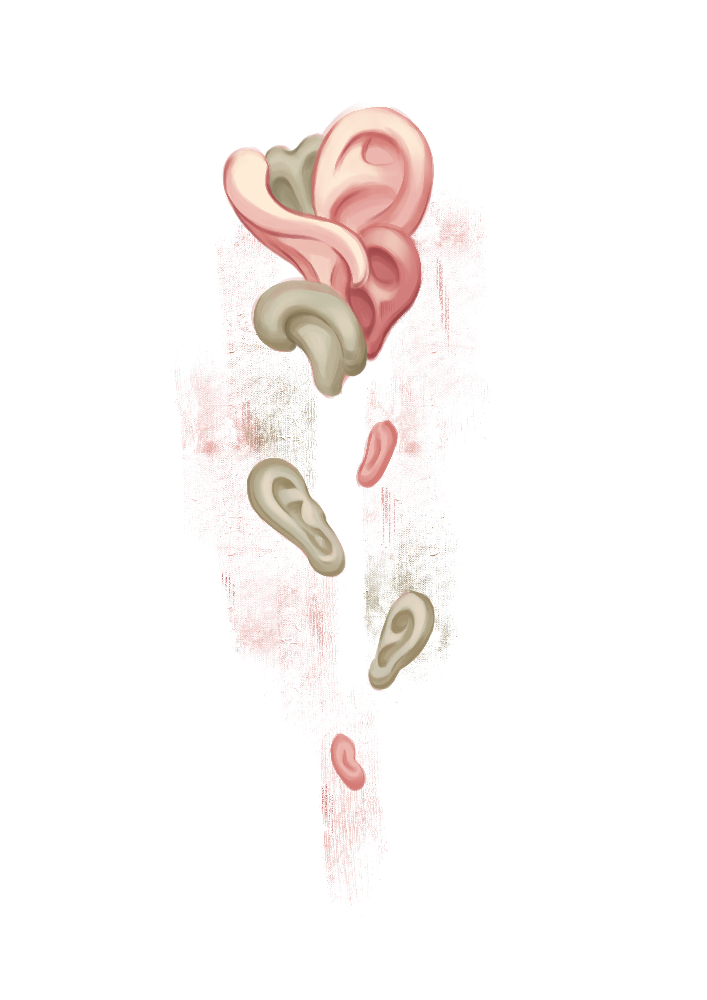
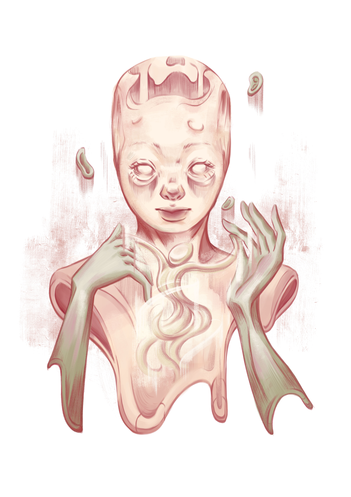
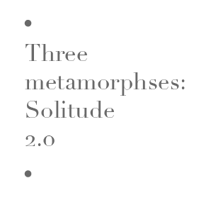

1.1
有人說：「孤獨的寂靜使我蒙羞和不安，
Some says“ I repudiate silence, I fear solitude.
我需要找到我的知音人。」
I long for a soul mate who heeds my aptitude.”

1.2
孤獨道：「使你窘態盡現的不是我，
Solitude thus replies “It is never I who inflict suffering on you from head to toe,
我給予你的是自由，去支配思想與欲望的自由。」
here you have absolute control, here limitlessness is what you shall behold.”

1.3
孤獨雖則是沉靜的，
When the world is sound asleep in silence,
但最偉大的創造亦是生於寂靜。
the greatest invention makes its entrance.

1.4
直視著鏡中的自己，
Who am I to be,
眼中的不安與茫然透露着對自己的不自知。
if the mirror does not recognise me?

1.5
他發現，即使知音人在耳邊歌唱，靈魂終究是寂靜無聲的。
The most gracious calling from the closest one is silent to the soul.

1.6
若你選擇支配孤獨，便不必感到害躁，只需要聆聽自己的音色。
Take control of solitude and let rhythms of our souls unfold.

1.7
既使內心的聲音是微弱的，靈魂也會跟隨你的節奏起舞。
However frail, however wild, the soul will uphold.


聆聽知音人歌唱前，自己內心的音調是什麼？
Before we seek our companion of soul, are you orchestrating what you were told?